Monkey Demo Guide
The monkey demo provides a simple fun environment where you can get your game design on.
Monkey code is easy to read, clean with a pleasing modern programming design.
The free version of monkey lets you code 2D video games in HTML5,
Upgrade to Monkey Pro and you can write code in monkey once and then let it produce efficient translations into 5 other programming languages hosted on no less than 7 different target computing devices.
Installing Monkey Demo
First download MonkeyDemo45c.zip
The demo is currently 45C a particularly stable version of the monkey language with interfaces and generics language additions and an HTML5 server daemon named mserver.
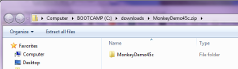
Monkey is distributed as a single portable folder inside a zip archive.
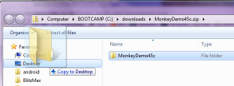
If you are simply evaluating monkey, expand the folder onto your desktop.
Locate the Monk application inside the newly created folder.
Monk is the free code editor for Monkey and is distributed with both MacOS and Windows versions in same folder.
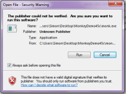
Blitz Research does not sign their tools so if you have downloaded the demo from the official site as instructed above, untick the "Always ask before opening" box and run the monk editor.
Go Bananas
Instead of reading the manual, go straight to the bananas folder inside monkey in the treeview on the right.
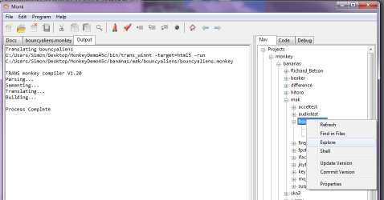
This folder contains a number of samples contributed by the original beta testing crew in particular the mak folder where the author of the monkey language Mark keeps his tests and examples.
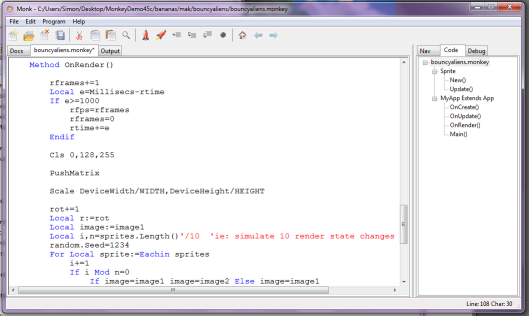
By double clicking the bouncingaliens.monkey file entry in the bananas folder, the source code should open in the editor.
Build and Run
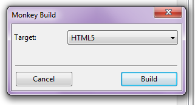
Clicking on the spaceship or pressing the F5 key should build and run the source code.
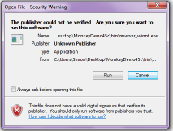
More permissions are required to run mserver monkey's internal web server. Untick the box and let the Blitz Research mserver program run.
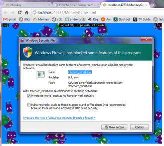
The mserver app communicates with your HTML5 web browser (IE9 and above, Chrome, Safari, FireFox etc.).
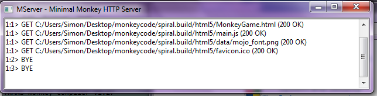
Once mserver is running, the various media requests are listed as the monkey HTML5 app runs in the browser.
Increase Aliens
Increase the number of bouncing aliens by clicking the >> button at top right until the fps (frames per second) of the app begin to decrease.
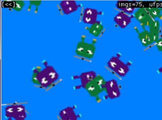
Different browsers and different computers will have different performance characteristics.
Explore the Build
After building the bouncy aliens demo you can Refresh the folder view to explore the newly created .build folder that monkey has created.
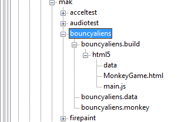
Those with existing html5 skills can modify the games .html container. There are some dependencies between a .build folder created by monkey and the monkey version. When upgrading to newer versions of monkey, be prepared to move or backup then delete the .build directory structure monkey maintains in your game's source folder.